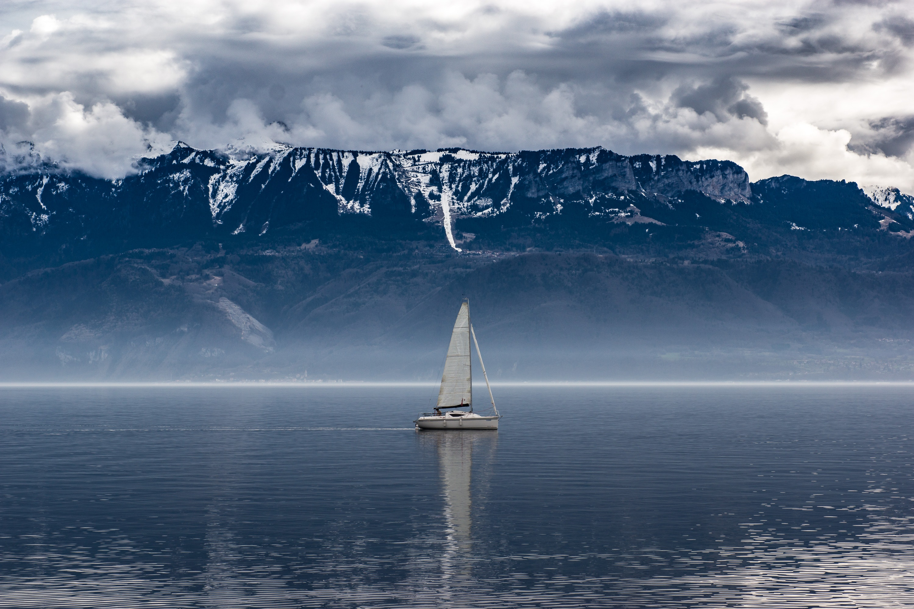

The ocean is a continuous body of salt water that covers more than 70 percent of the Earth's surface.
Ocean
currents govern the world's weather and churn a kaleidoscope of life. Humans depend on these teeming
waters
for comfort and survival, but global warming and overfishing threaten Earth's largest habitat.
Geographers divide the ocean into five major basins: the Pacific, Atlantic, Indian, Arctic, and
Southern.
Smaller ocean regions such as the Mediterranean Sea, Gulf of Mexico, and the Bay of Bengal are called
seas,
gulfs, and bays. Inland bodies of saltwater such as the Caspian Sea and the Great Salt Lake are distinct
from the world's oceans.
The oceans hold about 321 million cubic miles (1.34 billion cubic kilometers) of water, which is roughly
97
percent of Earth's water supply. Seawater's weight is about 3.5 percent dissolved salt; oceans are also
rich
in chlorine, magnesium, and calcium. The oceans absorb the sun's heat, transferring it to the atmosphere
and
distributing it around the world. This conveyor belt of heat drives global weather patterns and helps
regulate temperatures on land, acting as a heater in the winter and an air conditioner in the summer.
Sea Life
The oceans are home to millions of Earth's plants and animals—from tiny single-celled organisms to the
gargantuan blue whale, the planet's largest living animal. Fish, octopuses, squid, eels, dolphins, and
whales swim the open waters while crabs, octopuses, starfish, oysters, and snails crawl and scoot along
the
ocean bottom.
Life in the ocean depends on phytoplankton, mostly microscopic organisms that float at the surface and,
through photosynthesis, produce about half of the world's oxygen. Other fodder for sea dwellers includes
seaweed and kelp, which are types of algae, and seagrasses, which grow in shallower areas where they can
catch sunlight.
The deepest reaches of the ocean were once thought to be devoid of life, since no light penetrates
beyond
1,000 meters (3,300 feet). But then hydrothermal vents were discovered. These chimney-like structures
allow
tube worms, clams, mussels, and other organisms to survive not via photosynthesis but chemosynthesis, in
which microbes convert chemicals released by the vents into energy. Bizarre fish with sensitive eyes,
translucent flesh, and bioluminescent lures jutting from their heads lurk about in nearby waters, often
surviving by eating bits of organic waste and flesh that rain down from above, or on the animals that
feed
on those bits.

Despite regular discoveries about the ocean and its denizens, much remains unknown. More than 80 percent
of
the ocean is unmapped and unexplored, which leaves open the question of how many species there are yet
to be
discovered. At the same time, the ocean hosts some of the world's oldest creatures: Jellyfish have been
around more than half a billion years, horseshoe crabs almost as long.
Other long-lived species are in crisis. The tiny, soft-bodied organisms known as coral, which form reefs
mostly found in shallow tropical waters, are threatened by pollution, sedimentation, and global warming.
Researchers are seeking ways to preserve fragile, ailing ecosystems such as Australia's Great Barrier
Reef.